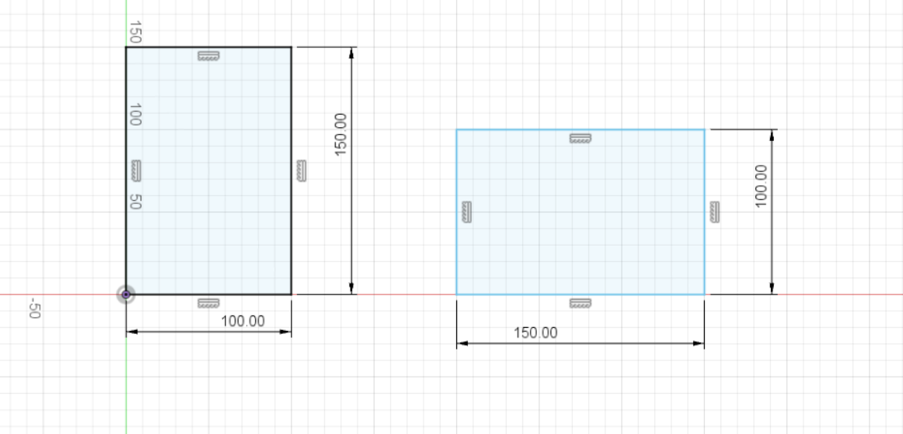
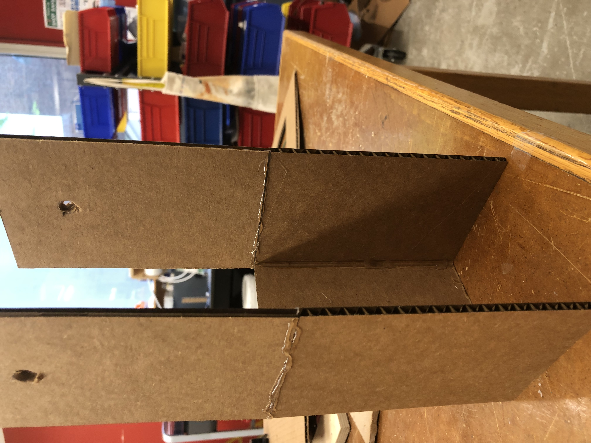
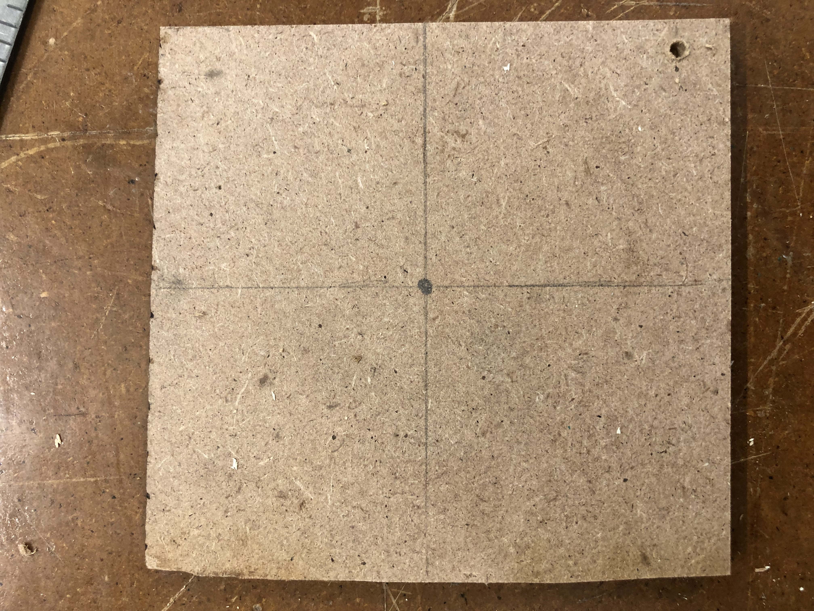
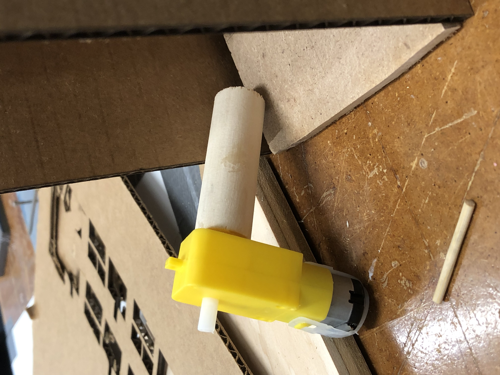
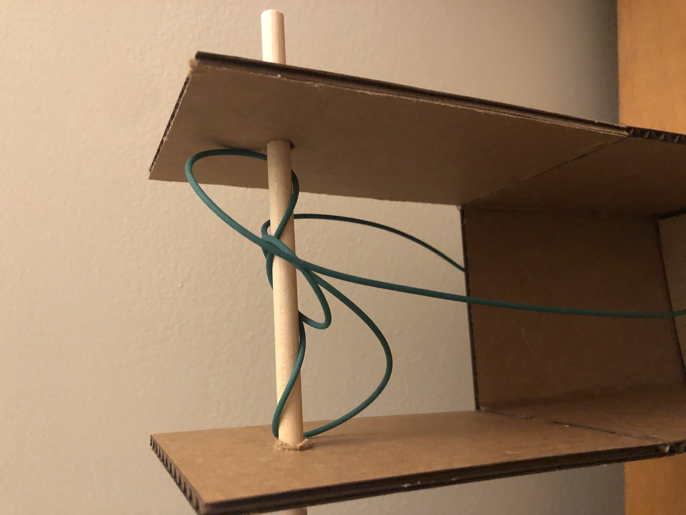

Week 2: Electronics and Tools
Week 2 started off with me getting use to all the tools in the workshop, the different kinds of saws, drills, machines, etc
The task was to create a kinetic structure, using a motor we were given.
I quickly started off with the idea of creation an elevator which utilized a pulley system connected to the motor to ascend and descend
 The fusion 360 work was pretty simple all thats needed is a rectangle to act as the elevator shaft and to create two holes on both ends for the bar to hold the rope
Next up was creating the floor for the elevator
I drew lines to mark the middle of the floor and then proceeded to drill a hole in the middle which would then be used to fit the rope through/p>
As time went on I ran into a challenge that took up way too much of my time
For some reason, it took almost an entire hour for the glue to stick the wood and the motor together, which gave me a huge time constraint
The purpose of the wood being stuck onto the motor is that the rope would be tied onto the wood, in turn pulling or pushing down the elevator tied by the rope
However, I sadly was running out of time and decided to work on the final touches at home, a notion which didnt seem too challenging
As seen above, though, the rope was too elastic and would not wrap around anything without unwrapping itself
As a result, I had to come back next week and continue working on the project during the microcontroller programming section, which can be seen here